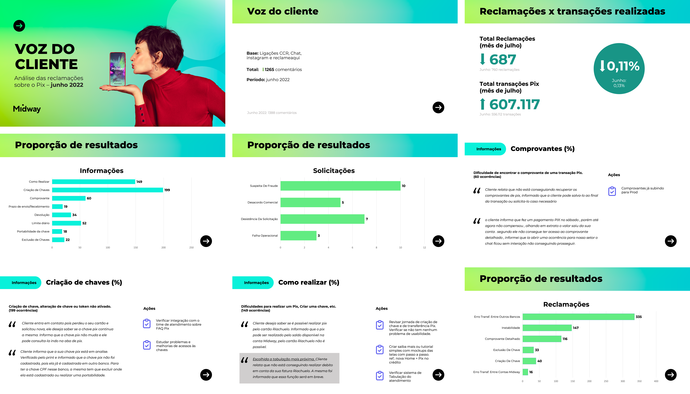
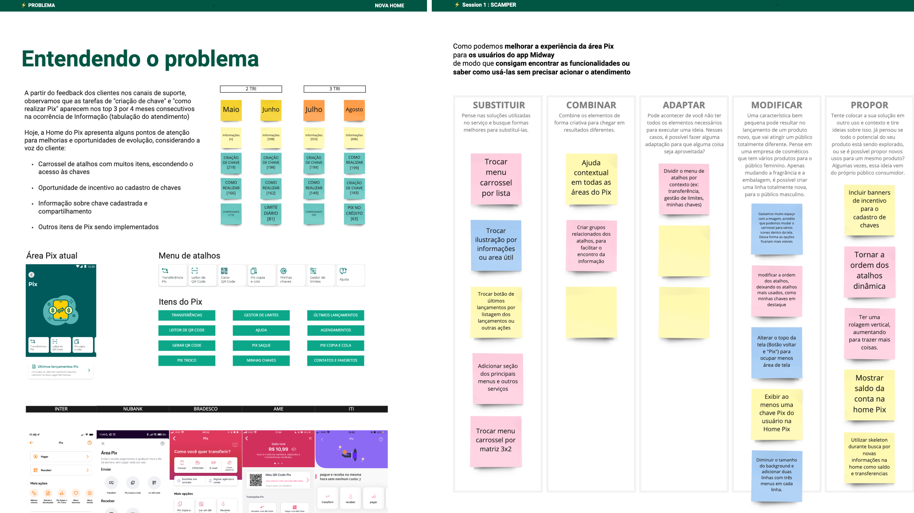
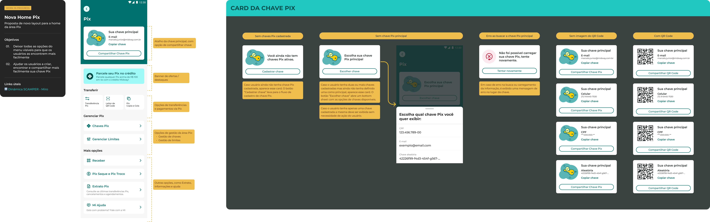
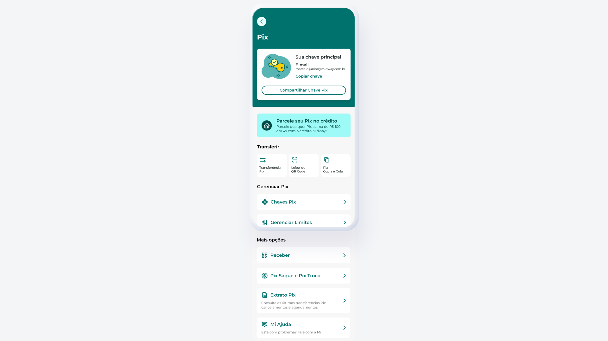
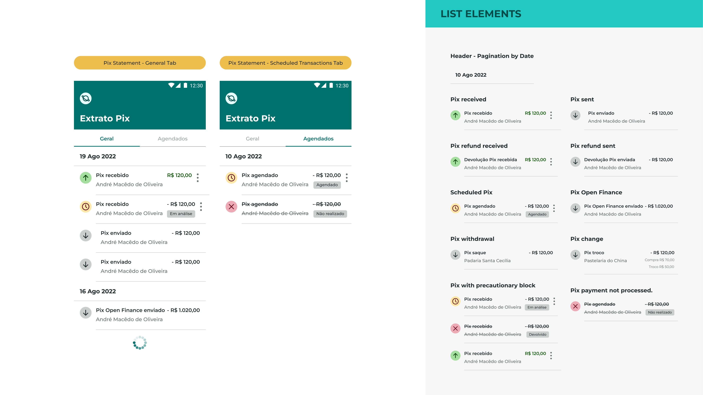
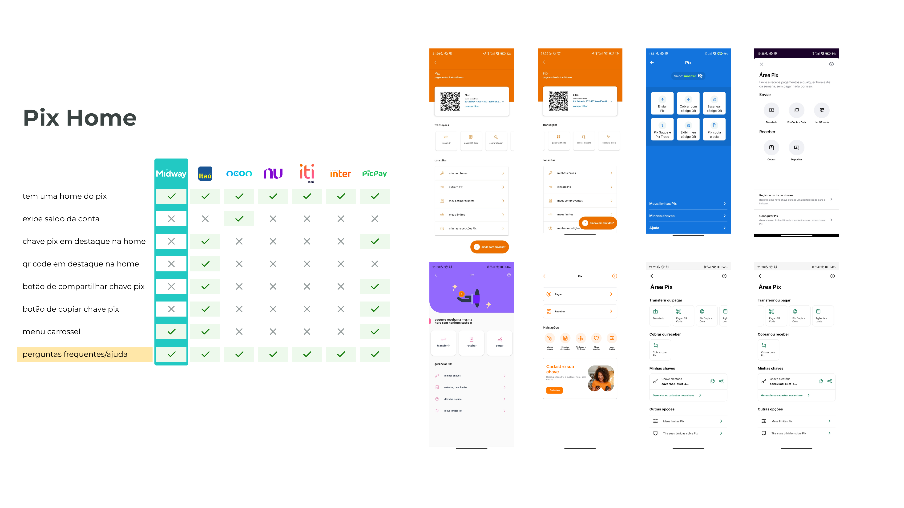

Building a data-driven design practice in fintech
Industry
Banking, Fintech
Role
Senior Product Designer
Period
Nov 2021 – Jan 2023

As Senior Product Designer, I led UX strategy and discovery for the entire Pix area of Midway's fintech app — redesigning the home screen and transaction history, and building a data-driven research practice from the ground up. The result: a 33% increase in Pix usage following the rollout of core transaction features, plus a documented discovery framework that gave design a lasting, evidence-based voice in product decisions.
Context
Midway, a fintech within a well-established retail group, already had Pix (Brazil's instant payment system) in its app — but usability and information architecture issues hurt the customer experience and drove constant contact with support. Direct access to users was limited, flows weren't tagged for analytics, and prioritization leaned on intuition rather than evidence — an approach that had already produced one failed feature after months of development.
The challenge
How do you practice data-driven design in an environment where almost no data is available — and still influence product decisions?
My role
As Senior Product Designer, I was responsible for the entire Pix area of the app, leading UX strategy and discovery — going beyond delivering screens to change how the team made product decisions.
What I did
- Evolved the Voice of the Customer (VoC) report from raw data into a monthly, trend-driven input for prioritization
- Structured a discovery framework combining VoC/NPS data, benchmarking, and early workshops with engineering
- Redesigned the Pix home screen, replacing a limited carousel with a grouped list and a fixed Pix key card
- Redesigned the Pix transaction history for visual consistency and clarity
- Benchmarked 6 market players (Itaú, Neon, Nubank, Iti, Inter, PicPay)
- Mapped Bacen notification requirements and reviewed push notification copy for compliance
Evolving the Voice of the Customer (VoC) report
The team already received a monthly spreadsheet from the Contact Center with all customer interactions about Pix. A report was being produced from that spreadsheet, but it only presented raw data with no historical reference, and it ended up forgotten after the monthly presentation. Over the months, I dug deeper into that spreadsheet and found ways to extract more relevant insights — cross-referencing categories, tracking trends over time, and connecting user pain points to backlog decisions. Over time, this material began to be actively used to support and defend design decisions and influence the PM's prioritization.
Discovery framework
We had a costly lesson with Pix no Crédito, a feature that allowed users to make instant payments using a credit card. After months of development, it was launched and quickly deprioritized due to low adoption, highlighting the need for a more structured process before building new features. Together with the other Midway designer and the PM, I began structuring a discovery framework adapted to the project's reality: starting from Voice of the Customer and NPS data, moving through benchmarking, and involving the development team from the very beginning with collaborative workshops to map technical constraints and risks before any decisions were made.
Pix home redesign
The Pix home screen had a carousel menu that displayed only 3 options, hiding the rest — causing confusion, with customer complaints pointing to difficulty navigating and finding features, especially the Pix key. We revisited the information architecture and chose to replace the carousel with a vertical list grouped by action categories (transfer, manage, more options), and created a fixed card on the home screen to display the main Pix key, making it easier to share.






Additional deliverables
Pix transaction history — We aligned the Pix statement to the visual standard of the main account statement, fixing layout inconsistencies and visually differentiating transaction types: received, sent, refunded, and scheduled. To explore solutions, we ran a Crazy 8's session with the full team (devs, QAs, PM, and SMs), which helped generate diverse ideas and align expectations early in the process.
Benchmarking — We conducted a comparative analysis of the main Pix flows (home, transfers, limit management, statement, and my keys) across 6 market players: Itaú, Neon, Nubank, Iti, Inter, and PicPay. The study served as a reference for redesign decisions and helped identify market patterns that users were already familiar with.
Notification mapping — We mapped all mandatory and non-mandatory Bacen notifications and reviewed the push notification messages, adjusting the tone and ensuring regulatory compliance.
Results & impact
A 33% increase in Pix usage followed the rollout of core transaction features in November 2022. Beyond that metric, I wasn't able to track quantitative results for all the changes, since the flows were still not tagged when I left the project — an important limitation to acknowledge. What I can say with confidence is that, throughout the project, design gained a stronger voice in product decisions: the PM started using Voice of the Customer data as a prioritization criterion, and the discovery framework was left as a documented process for the team to keep using. More than the deliverables themselves, the legacy I tried to leave was showing that design decisions can (and should) be backed by evidence — even when the available data is imperfect.
What I learned
Working in an environment with low research maturity taught me to be creative with the resources available. It's not always possible to follow the ideal process — but that's no reason to abandon process altogether. There's always a way to make well-grounded decisions within the constraints of the context.
This case study is protected
Enter the password to read the full case study.